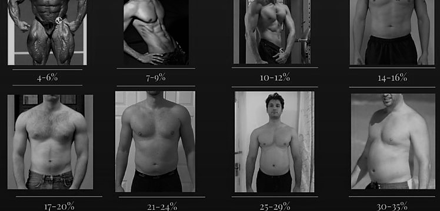

Now that we have understood what is BMI and body fat percentage and realised what the numbers are it is very important to know where we stand and what our goals are
To understand this it becomes very necessary to understand the phases of building muscle
Here’s The Lowdown On Bulking Vs Cutting A person would “bulk” when their primary goal is to build muscle.
To begin with let’s get one thing straight,
bulking does not mean eat whatever you like because ‘you're bulking bro’ so put down the takeaway menu! To bulk the smart way keep to the ultimate goal which is to build muscle whilst keeping fat gain to a minimum and maintaining a healthy
balanced diet. After all it is muscle you want to gain right? At some point you’ve got to get that fat off – don’t make this stage harder for yourself!
A person would “cut” when their primary goal is to lose fat.
When cutting,
the ultimate goal is to lose fat whilst maintaining all of the muscle you’ve worked so hard to build. You should then alternate between phases of bulking up and cutting down until you’re as lean and muscular as you desire. If you do it
the wrong way you’ll gain too much excess body fat while bulking and/or lose too much lean muscle while cutting down – you’ll basically spin your wheels and get nowhere! So now you’ve got some questions right?
Which Phase Do I Start
With? For the majority of people bulking before cutting makes the most sense. Building a good solid base of muscle before stripping away excess fat to reveal the muscle below. Having said this, if you are already extremely overweight your
primary goal may be to lose fat, so I would suggest a fat loss diet to get your weight under control before returning to the bulking phase and back to cutting (should you desire).
How Long Should Each Phase Last Before Switching The
Other? There is no definite answer to how long each phase should last. Generally it doesn't matter a whole lot the frequency you choose what's important is to keep going until you achieve the desired results. However, for most I recommend
bulking for 2-3 months, then cut down for however long you need to get rid of the unwanted amount of fat. Everyone will need a different amount of time.
What Do I Eat During Each Phase? The main diet difference between cutting and
bulking is your carbohydrate intake and reduced/increased calories overall. Whilst bulking up you will want to increase the amount of complex carbs across most of your meals. For example adding brown rice, oats, sweet potatoes, etc. The
quantities will be personal to your current body weight.
Whilst cutting down you will simply want to drop the quantity of these complex carbs, and timing them around your workouts rather than at every meal. Protein levels will remain
generally the same with a small increase in healthy fats. The amount of cardio that is undertaken also differs between the phases but let’s focus on the nutritional element of bulking and cutting for now.
Why Don’t We All Lose Fat
And Build Muscle At The Same Time? It is possible to gain muscle whilst dropping fat but completing the phases separately will give you maximum results. In order to cut down, you need to use more calories than you take in. In order to
bulk up, you've got to take in larger amounts of calories to support the strenuous training sessions. As you can see it would be pretty difficult (but not impossible) to do both of these things simultaneously. Remember to bulk smart and
eat clean, and then you shouldn’t need to spend every waking moment during the cutting stage on the stair master.
The left image shows a person after his bulking phase and right image is of the person after his cut phase.
Compare yourself with the image while standing in front of a mirror to know your estimated fat percentage.
Eat at a caloric surplus The first thing to keep in mind when bulking is that you should be eating a caloric surplus to promote significant muscle growth.
Generally, when you eat at a caloric surplus, your body will be in an “anabolic”
state. This means that it’s in a growth phase where new tissue will be constructed, including muscle and bone among other things.
Your caloric surplus should be controlled. You should eat slightly above your “maintenance” calorie needs,
but shouldn’t overdo it. If your strength and weight are slowly rising, with minimal fat gain, that’s a good sign.
Tools like MyFitnessPal can help you to estimate your ideal daily calorie intake.
Eat moderate protein and fat,
and a substantial amount of carbs Low-carb diets are popular for various reasons, but they’re not a great strategy for bulking up. When you’re bulking, your body needs the glycogen produced by carb-consumption to power heavy lifts.
The insulin spikes associated with high carb intake also play some role in promoting muscle growth, which is why elite level bodybuilders often inject insulin directly.
Although protein is usually thought of as the number one
macronutrient required to build muscle, evidence shows that your bulking protein requirements are lower than you might think.
Research has found evidence that around 1.3-1.8g of protein per kg of bodyweight is the highest threshold
where protein intake seems to improve body composition during a bulk.
In other words, an 80kg person would need to eat between 104g - 144g of protein during their bulk to keep gaining muscle, far less than is usually recommended.
Fat intake should be kept moderate for proper hormonal balance. Lift heavy and focus on a moderate rep-range As the point of bulking is to pack on muscle, it’s important to lift heavy in a moderate rep range of about 8-12 reps per set.
Base your workouts around compound lifts like the squat and bench press, and add in assistance exercises to focus on particular muscle groups.
Emphasise steady progress in your lifting.
Avoid “dirty bulking” to avoid excess
fat gain “Dirty bulking” refers to eating junk food to bulk up. Not only is this bad for your health, but it also promotes greater fat gain, which makes your cutting phase harder. Try to avoid this common pitfall.
Sweat class PureGym Eat at a caloric deficit Just as the aim of bulking is to be in a caloric surplus, the aim of cutting is to be in a caloric deficit. This puts you in a “catabolic” state — one where tissue is broken down in the body.
Keep your calorie intake below maintenance, but don’t go too low.
Reduce insulin to increase fat burning Low-carb dieting and techniques like carb-backloading and intermittent fasting are largely thought to work because they reduce
insulin levels in the body and improve insulin sensitivity.
Experiment with these techniques to see how they work for you. Focus on exercises that get your heart rate up and burn significant calories When cutting, burning excess calories
during your workouts is something to aim for. Modify your training routine to make it more dynamic and keep your heart-rate up. Reducing rest times and using super-sets can be a good idea.
Keep protein intake up Protein is more important
on a cut than a bulk because it helps to spare muscle during tissue wasting. You may not need to boost your protein intake dramatically during a cut, but keeping it a bit on the higher side can be a good idea.
Continue to strength
train, but don’t expect significant gains Resistance exercise is known to help maintain muscle mass during a calorie deficit, so continuing your strength-training regimen during a cut is essential.
Strive to progress your lifts wherever
possible, but don’t expect significant gains.
A COMPLETE GUIDE TO BULKING AND CUTTING.